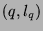
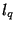
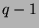

Usage
slopes N
Signature
slopes: % List Cross(Fraction Integer, List Cross(Integer, Integer, Rx))
| Parameter | Type | Description |
|---|---|---|
| N | % | a Newton polygon |
Description
Returns a list of slopes  with increasing q, where q is the slope of a segment of the lower enveloppe of N, and  is the list of points on that segment, sorted by decreasing first coordinate (see points for the description of the format of ).
Remarks
When Rxy is a LinearOrdinaryDifferentialOperatorCategory over Rx, then each slope q in the algebraic Newton polygon corresponds to the slope  in the differential Newton polygon.
See Also
points